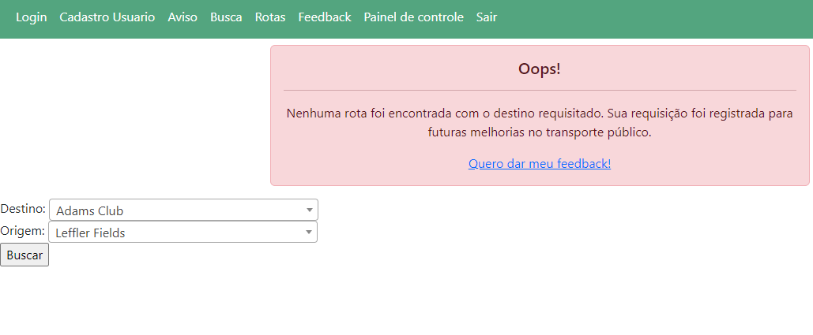

Não consigo achar uma rota!
Porque não encontro uma rota e como minhas buscas são armazenadas
É possivel fazer buscas que não recebem retorno,
e isso é normal, o banco possue todas as rotas do vai camaçari,
mas é possivel não haver rotas que atendam sua origem de busca, ou destino procurado
você pode dar feedbacks tanto quando não haver rotas para sua busca quanto qualquer outro problema
com transporte público que você tiver.

Caso isso ocorra, tente colocar outro destino ou origem, é possivel verificar as rotas através do site do vai camaçari além disso, o sistema coleta quando uma busca não recebi retorno, e trazemos essa informação para os responsaveis pela gestão das rotas do vai Camaçari, para os responsaveis planejarem uma realocação dos ônibus na tentativa de criarem uma rota que atenda sua necessidade no futuro